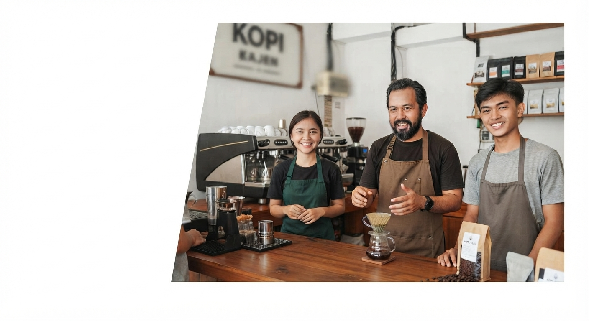

Cerita Usaha
Tentang Kopi Kajen
Kopi Kajen adalah UMKM fiktif yang mengolah kopi lokal untuk kebutuhan pembelajaran.

Nilai yang Kami Bawa
- Bahan lokal dari petani sekitar.
- Proses sederhana dan transparan.
- Pelayanan ramah untuk pelanggan harian.